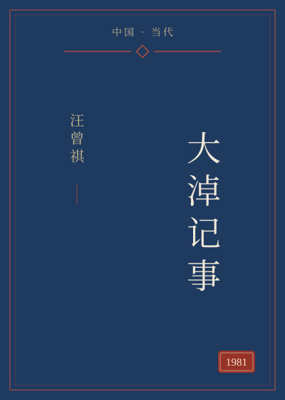
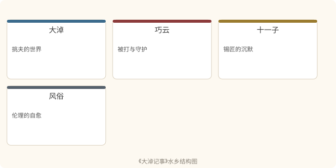

大淖记事
一、基本信息
| 作者 | 汪曾祺 |
|---|---|
| 成书/出版 | 1981年发表（《中国文学》同年选译至海外——中国作家网 C014） 汪曾祺：'人间送小温'（中国作家网）（官方文学机构） |
| 国别/地区 | 中国 |
| 时代 | 现当代 · 当代 |
| 体裁 | 短篇小说 |
| 语言 | 汉语（白话） |

《大淖记事》水乡结构图（主题·结构图）
二、创作背景
中国作家网（C014）：'《大淖记事》甫一问世，就被《中国文学》选中翻译至海外，1984年又入选英文版《当代优秀小说选》'。
中国作家网（C013）：汪曾祺'晚年凭借短篇小说《受戒》《大淖记事》等异军突起'。
三、内容脉络
大淖的风俗画：挑夫们的生活（通说待核）。
巧云与十一子：被打与'不知道为什么，她自己也尝了一口'（情节与名句待核）。
四、主要人物表
| 人物 | 身份 | 说明 |
|---|---|---|
| 巧云 | 姑娘 | 被侮辱者（通说待核） |
| 十一子 | 锡匠 | 被打垂危（通说待核） |
五、主题与艺术特点
- 风俗与人情（C013：人情美人性美语境）。
- '受戒'的姊妹篇：水乡的两幅画（通说）。
- 民间伦理的自愈力（通说）。
六、影响与评论
- 中国作家网：1981年被《中国文学》选译海外、1984年入选英文选集（C014）。
汪曾祺：'人间送小温'（中国作家网）（官方文学机构） - 中国作家网：与《受戒》并提的复出代表作（C013）。
满怀敬意地开掘出普通人的美（《受戒》与汪曾祺·光明网）（官方媒体）
七、阅读建议
难点
- 高邮水乡风物。
- 散文化结构的'淡'。
- 《汪曾祺全集》（人民文学出版社，通说待核）。
先《受戒》后本作。
八、待核实
- 巧云/十一子人名与情节核对。
- 1981年发表刊物（《北京文学》说）核对。
- 英译篇名核对。
本页主要来源
汪曾祺的其他收录作品：受戒